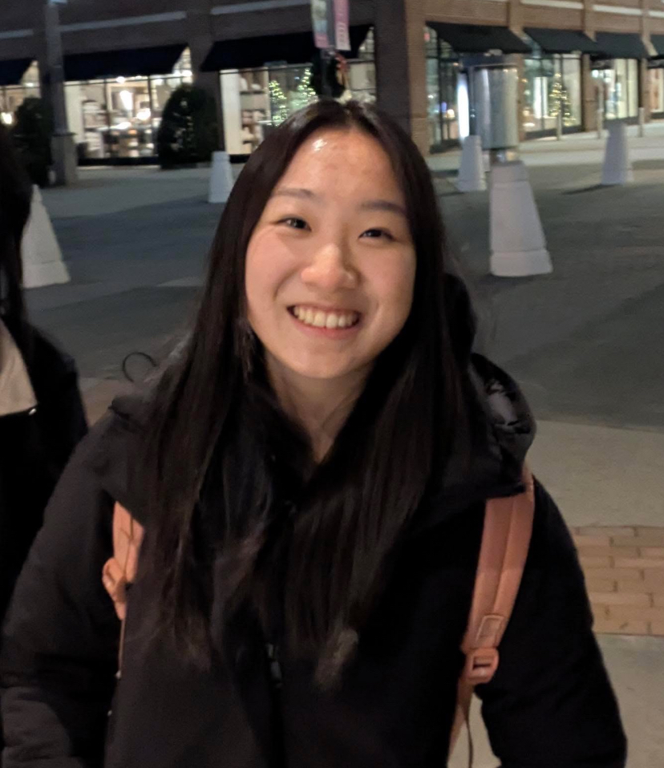

Noella Yang
Hi! I'm Noella Yang, an Electrical Engineering undergrad at Duke University.
Projects
Click a project to see photos, diagrams, and details.
ECE @ Duke
Hi! I'm Noella Yang, an Electrical Engineering undergrad at Duke University.
Click a project to see photos, diagrams, and details.